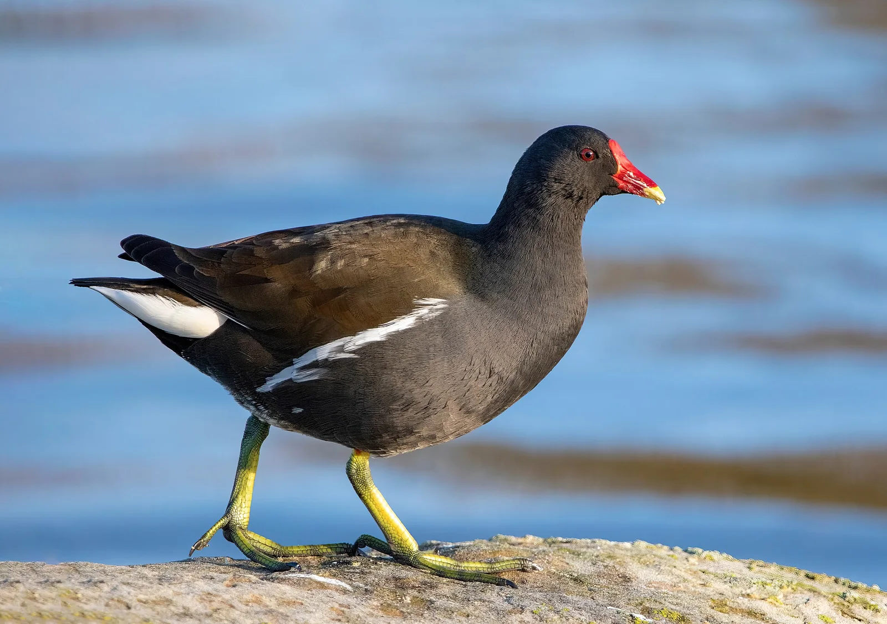

返回名录NO. 010 · 湿地与河涌 / 秧鸡科 · Rallidae
黑水鸡
Gallinula chloropus红色额甲、黄色「袜口」，游泳时头一点一点
黑色的小型水鸟，额头上顶着一块鲜红色的「牌子」，腿上有道红色的「袜口」。它在荷叶间游动时头一顿一顿，像在打拍子——这是黑水鸡最经典的动作。
图集 Plates & Photographs
一张科学绘图（博物画）用于对照形态与色块，两张野外摄影记录它在真实光线里的样子。点击任意一张可放大。
辨识特征 Identification
- 额甲额部一块鲜红色、略呈心形的裸皮，延伸至喙基，非常醒目。
- 喙喙尖端黄色，中段红色，与额甲连成一体。
- 体羽头颈深黑，背暗橄榄褐，胸腹深灰蓝，体侧有一道醒目的白色纵纹。
- 腿腿黄绿色，胫部有一圈鲜红色环带（俗称「红袜口」），趾长而无蹼。
习性 Behaviour
游泳时头部前后点动，是秧鸡科的典型动作。善潜水但时间短，遇险时常钻入水草或潜水躲避。食水生植物、种子、昆虫与小鱼。性较凶，繁殖期会激烈驱赶同类，打斗时用脚爪互踢。城市公园湖泊中最常见的水鸟之一。
鸣声 Voice
野外鸣声录音
点击波形可跳转 · 建议佩戴耳机
0:00 / 0:38
录音 iNaturalist 用户 matthewvosper · 许可 CC BY
· 原始文件
叫声多样，常见短促的「kruk」或「kurruk」，以及一连串咕噜般的「kurr-uk-kurr-uk」。受惊时发出尖锐的「kik」声。
在珠海去哪里找 Where to Watch
- 香山湖公园
- 海滨公园人工湖
- 各公园荷塘
- 斗门湿地
观察提示
和骨顶鸡的区别：黑水鸡有红额甲、体侧有白线、腿有红环；骨顶鸡额甲白色、通体黑、趾有瓣蹼。华南城市公园里两者都可能出现。